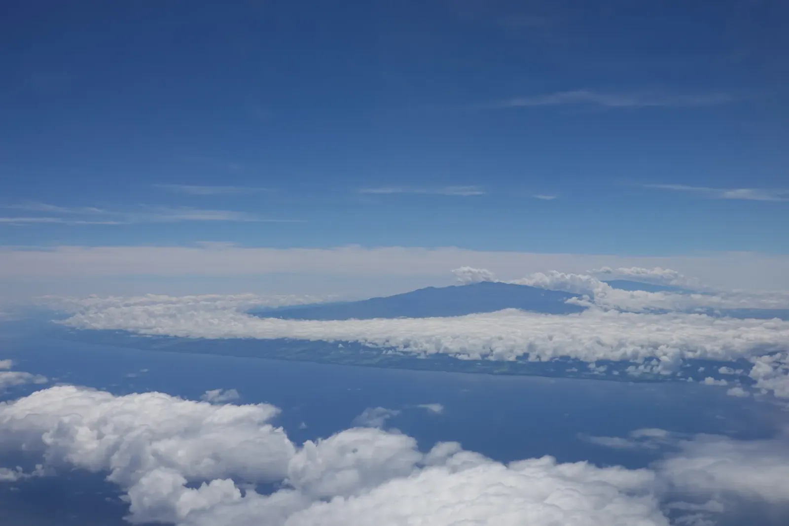

Unfinished Earth
The Big Island is still under construction. I got my first hint from the plane window, where a volcanic summit poked through the cloud deck and the coast below was black lava fields with one bright white-sand cove at the edge. My first full day took me to Puuhonua o Honaunau on the Kona coast, the old place of refuge, where black shelves of lava run straight into the sea and a still pond mirrors a row of coconut palms. Even the bare-looking rock at the water's edge had a green mat of plants clinging to it. Life moves in fast.
Further south, the Kau coast shows you how the island gets built. Black lava cools into shelves that crack into jigsaw pieces, and the Pacific spends all day taking the puzzle apart. The waves came in turquoise and gray-green and went off like cannons against the rock, leaving spray hanging in the air. Palms fringe the shore, and one lucky picnic table had a front-row seat to all of it.


Then the summit. Kilauea is one of the most active volcanoes in the world, and from the rim you look across a caldera so wide and flat that the plume rising from Halemaumau, the crater inside it, seems small. It isn't! In 2018 the summit collapsed and the floor of Halemaumau sank some 1,600 feet, and a new lava lake had started filling it again only days before I arrived. Over at Kilauea Iki, a gray crater floor lies below a rust-red cinder cone. In 1959 that floor was a lake of molten lava, and fountains up to 1,900 feet high built the cone. After dark, the sky above the crater glowed a deep orange.
Chain of Craters Road runs from the summit down to the sea, curving along the flank of the volcano toward a blue haze. The only traffic jam I hit was a pair of nene, Hawaii's state bird, strolling across the double yellow line and taking their time. Hunting and introduced predators had cut them down to about thirty birds by the 1950s, so I figure they've earned the right of way. Below the road, a black lava plain rolls out to the sea under puffy white clouds. Ground that is still being made does odd things to your sense of time. The map will probably be wrong again by my next visit.